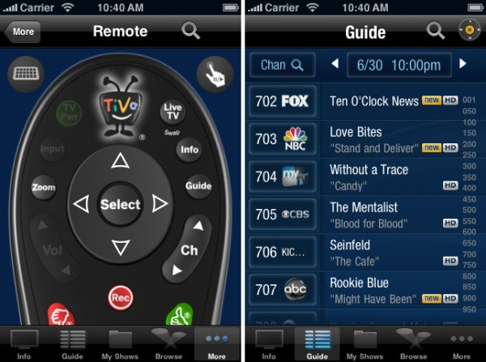
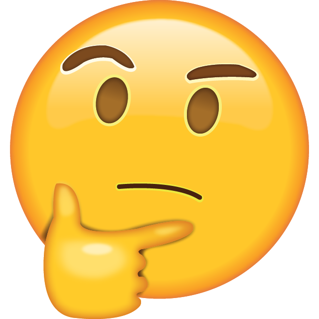

Voice Controlled
Home Automation
in Ruby
Jeff Sacks
Overview
- Questions - Interrupt at any time!
- Introduction
- Build HTTP based TV Remote
- Build Skill(s) for Amazon Echo
- Control a TV with just our voice
Twitter: @jeff_sacks
GitHub: jrsacks
DRW (Chicago)
Ruby, JavaScript, Clojure

Raspberry Pi
- February 2014
- No idea what to use it for
TiVo
- March 2014
- Record, Pause, Playback!
- A little bit of a life changer
My TV Remote Circa 2014

TiVo App

There Must Be a Better Way

TiVo TCP Remote Protocol
COMMAND {PARAMETER} {PARAMETER}...
FORCECH 602
TELEPORT GUIDE
TELEPORT LIVETV
Sharp Aquos TCP Protocol
{COMMAND}{PARAMTER}<CR>
4 Character length Command
4 Character length Parameter
- Power: "POWR0 \r"
- Input: "IAVD3 \r"
- Volume: "VOLM18 \r"
- Mute: "MUTE2 \r"
Sinatra TV Remote Server
class TvRemoteWeb < Sinatra::Base
set :tv, EventMachine.connect(TV_IP, TV_PORT, SharpAquos)
set :tivo, EventMachine.connect(TIVO_IP, TIVO_PORT, Tivo)
get '/tv/volume/up' { settings.tv.change_volume 1 }
get '/tv/volume/down' { settings.tv.change_volume -1 }
get '/tv/volume/:vol' { |vol| settings.tv.set_volume vol.to_i }
get '/tv/mute' { settings.tv.send_command("MUTE","1") }
get '/tv/unmute' { settings.tv.send_command("MUTE","2") }
get '/tv/power/off' { settings.tv.send_command("POWR", "0") }
get '/tivo/:command/:val' { |command, val| settings.tivo.send_data "#{command} #{val}\r" }
get '/tivo/ch/:chan' do |chan|
settings.tv.send_command("POWR", "1")
settings.tv.send_command("IAVD", "1")
settings.tivo.send_data "FORCECH #{chan}\r"
end
end
TiVo EventMachine Connection Class
class Tivo < EventMachine::Connection
def receive_data(data)
puts "Tivo: #{data}"
end
def unbind
puts "Tivo: Disconnected"
reconnect TIVO_IP, TIVO_PORT
end
end
TV EventMachine Connection Class Part 1
class SharpAquos < EventMachine::Connection
def post_init
@volume = nil
@timer = EM::PeriodicTimer.new(1) do
send_data "VOLM? \r" if @volume.nil?
end
end
def receive_data(data)
puts "SharpAquos: #{data}"
unless data.match(/ERR/) or data.match(/OK/)
@volume = data.to_i
end
end
def unbind
puts "TV: Disconnected"
reconnect TV_IP, TV_PORT
end
...
end
TV EventMachine Connection Class Part 2
class SharpAquos < EventMachine::Connection
...
def send_command(command, val)
if command.length == 4
val += " " while val.length < 4
send_data "#{command}#{val}\r"
end
end
def change_volume(delta)
@volume += delta
send_command("VOLM", @volume.to_s)
end
def set_volume(volume)
@volume = volume
change_volume(0)
end
end
My Remote Circa 2015

My Remote In March

Amazon Echo
- Alexa, What's your birthday?
- Alexa, What's the weather for tomorrow?
- Alexa, What time is it?
- Alexa, Who was the 23rd president?
- Alexa, What is your birthday?
- Alexa, Tell a joke.
What Is Alexa?

Echo Fun Facts
June 25, 2015 Alexa Skills Kit Released
Write your own skill (app) for Alexa
Over 15,000 published skills
Pandora, Dominos Pizza, Uber, Jeff's TV
Hello World
AWS Lambda Function:
exports.handler = function (event, context) {
context.succeed({
version: "1.0",
response: {
outputSpeech: {
type: "PlainText",
text: "Hello Ruby Conf. I'm glad this demo worked!"
},
shouldEndSession: true
}
});
}
Interaction Model
Utterances
RepeatName To say {name}
Intents
{
"intents": [
{
"intent": "RepeatName",
"slots": [{"name":"name","type":"AMAZON.US_FIRST_NAME"}]
}
]
}
Skill Setup Part 1

Skill Setup Part 2

Repeater Skill
AWS Lambda Function:
require 'json'
event = JSON.parse(ARGV[0])
name = event["request"]["intent"]["slots"]["name"]["value"]
STDOUT.puts({
version: "1.0",
response: {
outputSpeech: {
type: "PlainText",
text: "I heard you say #{name}."
},
shouldEndSession: true
}
}.to_json)
AWS Simple Queue Service (SQS)
- SendMessage
- ReceiveMessage
- DeleteMessage
Sending to AWS SQS:
Listening to AWS SQS:
TV Remote Intents
{
"intents": [
{"intent": "ChangeChannel",
"slots": [{"name": "Channel","type": "LIST_OF_CHANNELS"}]},
{ "intent": "Off"},
{ "intent": "VolUp"},
{ "intent": "VolDown"},
{ "intent": "VolSet",
"slots": [{"name":"Volume","type":"AMAZON.NUMBER"}]},
{ "intent": "Back"},
{ "intent": "Mute"},
{ "intent": "UnMute"}
]
}
Custom Slot Types
LIST_OF_CHANNELS CBS | NBC | ABC | WGN | FOX | ESPN | ESPN2 | CSN | BTN...
TV Remote Utterances
Off turn off
ChangeChannel turn on {Channel}
ChangeChannel change to {Channel}
VolUp turn up the volume
VolUp make it louder
VolUp be louder
VolDown turn down the volume
VolDown make it softer
VolDown make it quieter
VolSet set the volume to {Volume}
VolSet make the volume {Volume}
Back switch back
Back switch to the last channel
Back go back
Mute mute
UnMute unmute
TV Skill
Connecting SQS to the Remote
#!/usr/bin/env sh
set -e
while true; do
node sqsListener.js | xargs -I{} curl http://127.0.0.1:3000{}
done